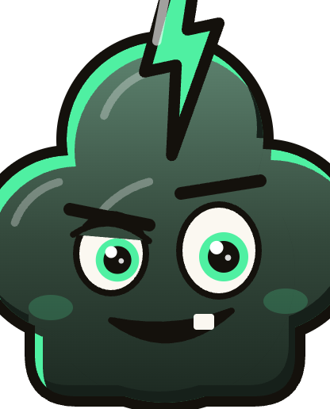
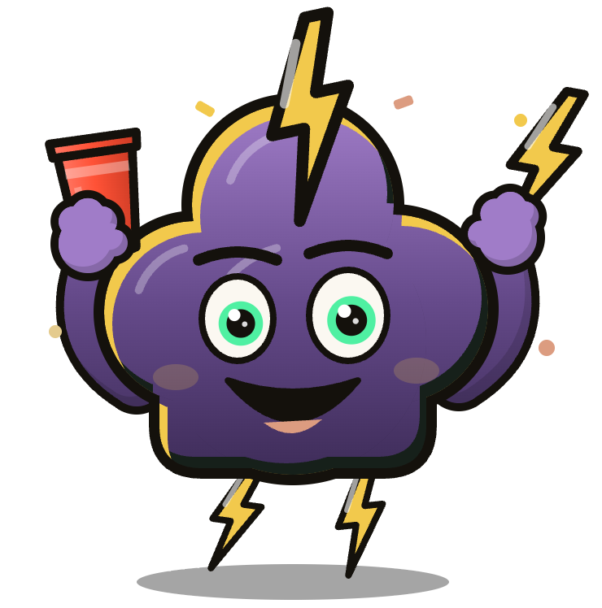
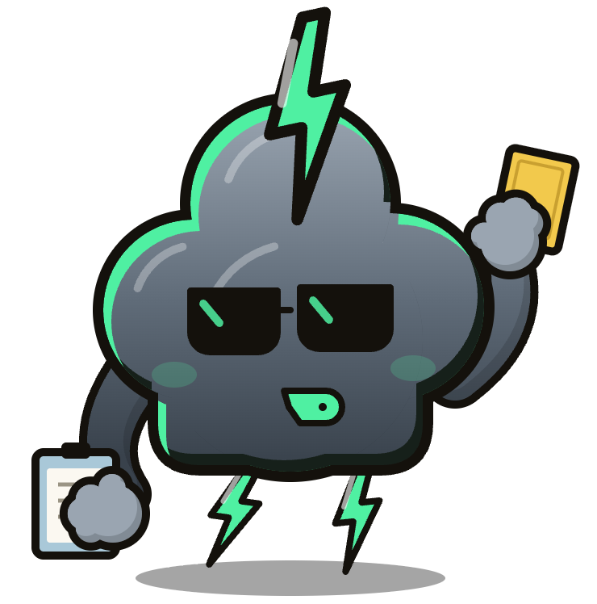
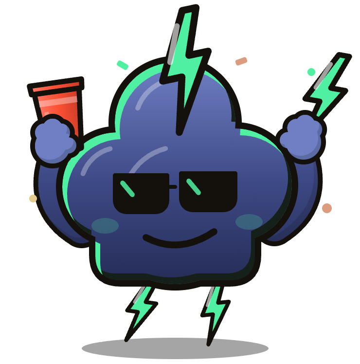
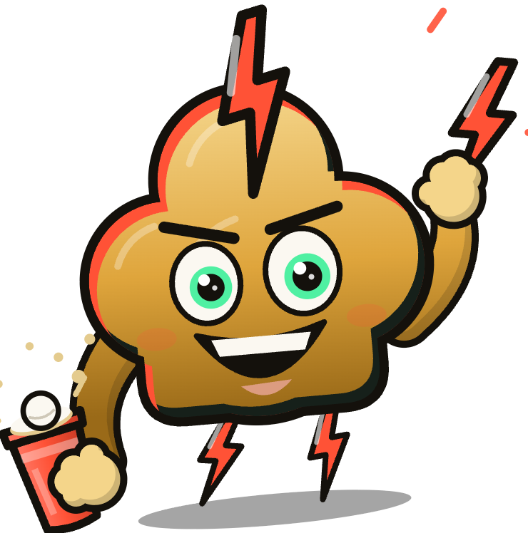
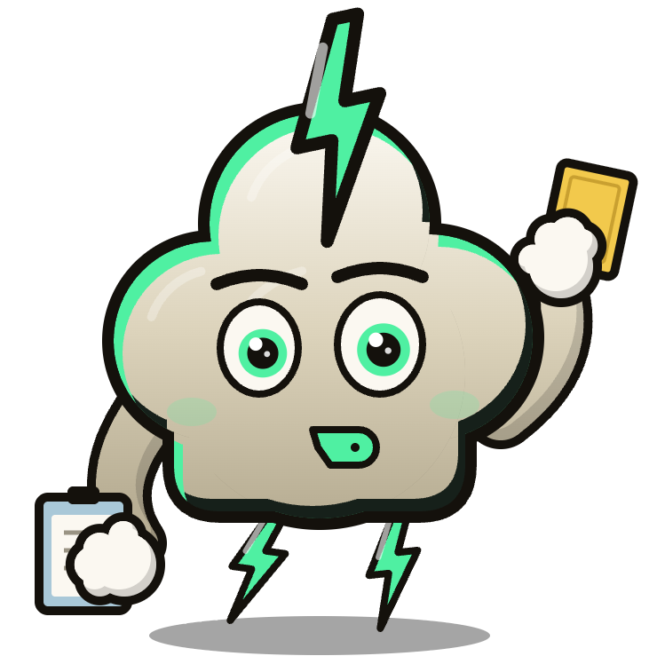

Jede Person ein Handy
Die Karte erscheint auf allen Handys. Geheimaufträge sieht nur die Person, die sie zieht.

CHLAPFTrinkspiel · Reihum
Reihum wird eine Karte gezogen. Mal ist es eine Challenge, mal eine neue Regel, mal ein Geheimauftrag.

Es gibt zwölf Kartentypen in vier Gruppen. Mit den Kategorien steuert ihr, was im Stapel landet.
Die Karte erscheint auf allen Handys. Geheimaufträge sieht nur die Person, die sie zieht.
Das Handy geht reihum. Ohne Setup, ohne Konto.

Zwei Teams, ein Becherdreieck, Chlapf zählt live mit.

Teams, Tische, Resultate und Siegerehrung an einem Ort.

Karten raten, Pyramide, dann fährt jemand Bus.

Vier Asse laufen um den Sieg, ihr setzt Schlücke.

Fragen vorlesen, wer's gemacht hat, trinkt.